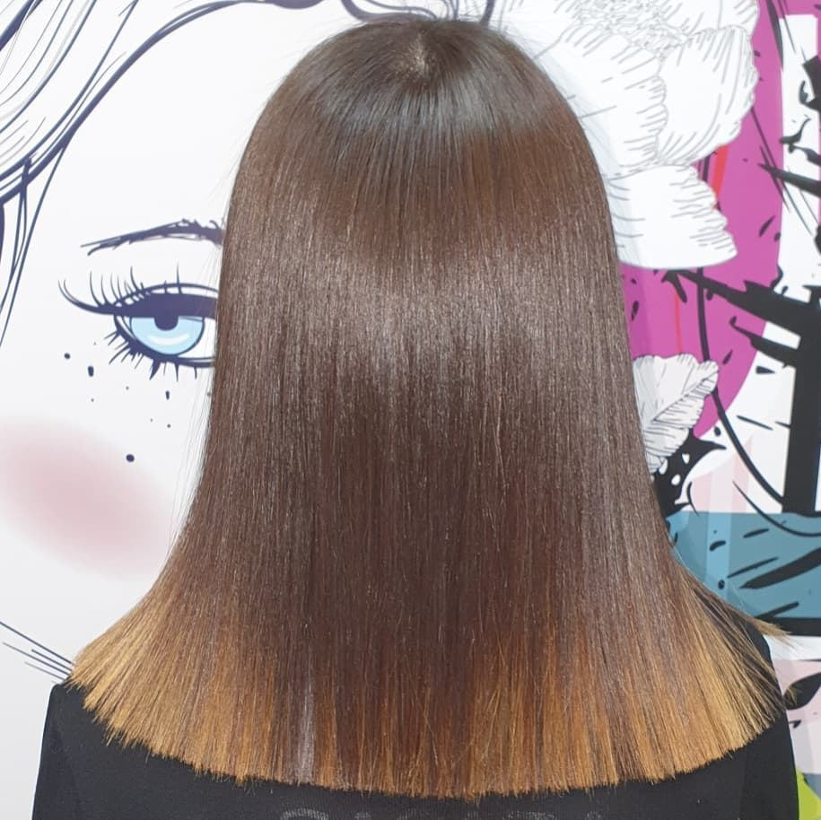
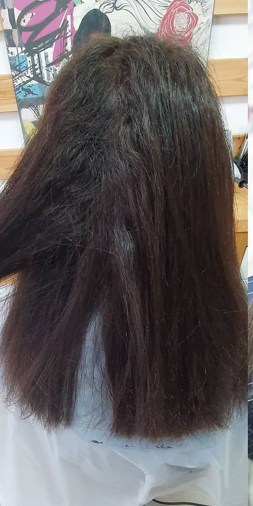
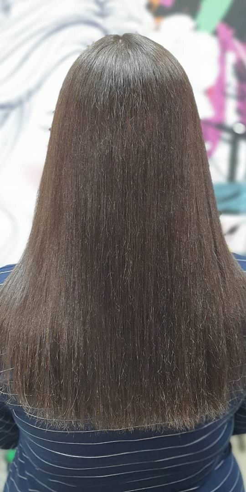
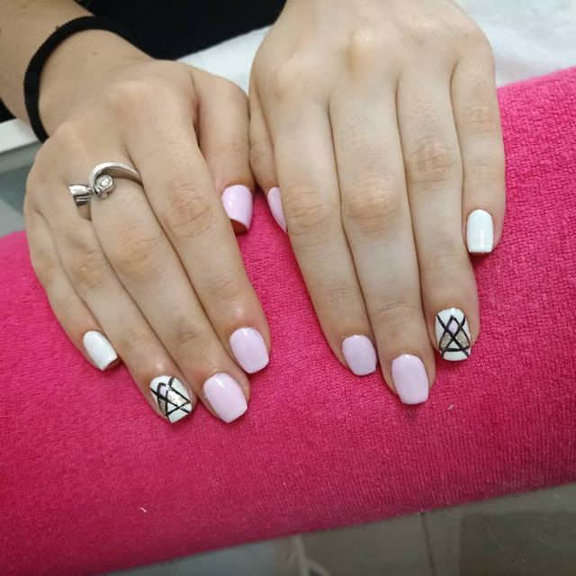
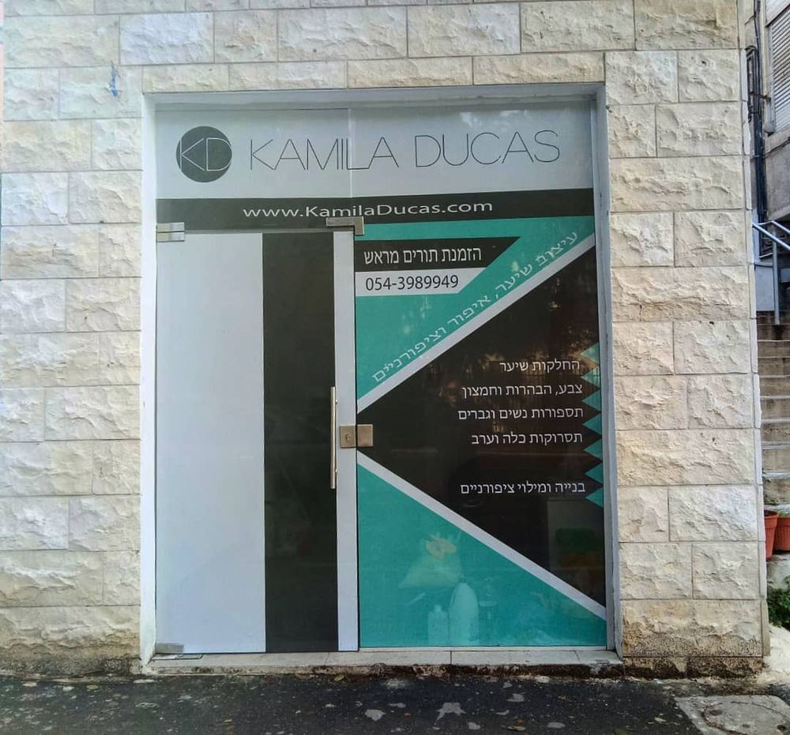

קמילה דוכסKamila Ducas שיער, איפור וציפורנייםHair, makeup & nails
קמילה דוכס - מעצבת שיער ומאפרת. החלקות, צבע, תספורות, תסרוקות ובניית ציפורניים בסטודיו שלה בקדיש לוז 11, קריית מוצקין.Hair designer and makeup artist Kamila Ducas: smoothing, colour, cuts, styling and nail extensions in her studio at 11 Kadish Luz St, Kiryat Motzkin.

החלקה מהשורש עד הקצוותSmoothing, from root to tip
לפני ואחרי מעבודה אמיתית של קמילה. גררו את המחליק למטה.A real before and after from Kamila’s chair. Drag the iron down.
לשאול את קמילה על החלקהAsk Kamila about smoothing״היה מאוד נעים להעביר פה את זמן ההחלקה ועוד יותר נעים כשראיתי את התוצאה״“It was very pleasant to spend the smoothing time here, and even nicer when I saw the result” (translated from Hebrew)
Yulia Lilien Levy · Google


מה עושים אצל קמילהAt Kamila’s studio
הרשימה מחלון הסטודיו בקדיש לוז, ועוד איפור.The list from her studio window on Kadish Luz, plus makeup.
-
החלקות שיערHair smoothing
לשיער חלק ומבריק.For sleek, glossy hair.
-
צבע, הבהרות וחמצוןColour, highlights & lightening
גוונים, פויל ובלונד.Tones, foils and blonde.
-
תספורות נשים וגבריםCuts for women and men
קו נקי וקצוות מסודרים.Clean lines, neat ends.
-
תסרוקות כלה וערבBridal & evening styling
לחתונה, לאירוע, לערב בחוץ.For the wedding, the event, the night out.
-
איפורMakeup
לכלות, לאירועים ולצילומים.For brides, events and photos.
-

בנייה ומילוי ציפורנייםNail extensions & fills
ג׳ל, משולשים ופסים דקים.Gel, triangles and fine stripes.
״הגעתי לקמילה דרך המלצות. עשיתי החלקה וקיבלתי שירות אדיב ומקצועי ביותר״“I came to Kamila through recommendations. I had a smoothing treatment and got kind, highly professional service” (translated from Hebrew)
סיון ברוןSivan Baron · Google
איפור מול המראהMakeup at the mirror
איפור ותסרוקות לכלות ולאירועים, באותו כיסא.Makeup and styling for brides and evenings, in the same chair.
״היחס שלה ואיפור שלה, היא עשתה לי החלקה נדירה״“Her attitude and her makeup; she gave me a rare smoothing” (translated from Hebrew)
TOHAR KEREN · Google
ציפורניים בקווים נקייםNails in clean lines
בנייה, מילוי ועיצובים עם משולשים ופסים.Extensions, fills and designs with triangles and stripes.
5.0 מ-35 ביקורותfrom 35 reviews
מה כותבים על קמילה בגוגל.What people write about Kamila on Google.
״חוויה מדהימה!! קמילה מקסימה ומקצועית מאוד! היה מאוד נעים להעביר פה את זמן ההחלקה ועוד יותר נעים כשראיתי את התוצאה. תודה על הכל! מומלץ בחום״“An amazing experience!! Kamila is lovely and very professional! It was very pleasant to spend the smoothing time here, and even nicer when I saw the result. Thank you for everything! Warmly recommended.”
Yulia Lilien Levy״קמילה מדהימה! תודה על כל הפינוקים, היחס החם והתוצאות המדהימות, תמיד כיף להגיע אליה!״“Kamila is amazing! Thank you for all the pampering, the warm attitude and the amazing results, it’s always fun to come to her!”
Anna Baruchel Levy״וואו הספרית הכי מושלמת בעולם. היחס שלה ואיפור שלה, היא עשתה לי החלקה נדירה, שווה כל שקל. ממליצה לכם״“Wow, the most perfect hairdresser in the world. Her attitude and her makeup; she gave me a rare smoothing, worth every shekel. I recommend her.”
TOHAR KEREN״הגעתי לקמילה דרך המלצות. עשיתי החלקה וקיבלתי שירות אדיב ומקצועי ביותר. בהחלט אחזור בשנית״“I came to Kamila through recommendations. I had a smoothing treatment and got kind, highly professional service. I’ll definitely be back.”
סיון ברוןSivan Baron״קמילה מהממת, אלופה, מקצועית. אני מרוצה וממליצה לכל אחד, לא תצטערו״“Kamila is gorgeous, a champion, professional. I’m happy and recommend her to everyone, you won’t regret it.”
Sheli Ifargan
ביקורות של 5 כוכבים מגוגל.Five-star Google reviews, translated from Hebrew.

קדיש לוז 11, קריית מוצקין11 Kadish Luz St, Kiryat Motzkin
דלת הזכוכית עם הפסים הטורקיז והשלט KAMILA DUCAS.The glass door with the turquoise stripes and the KAMILA DUCAS sign.